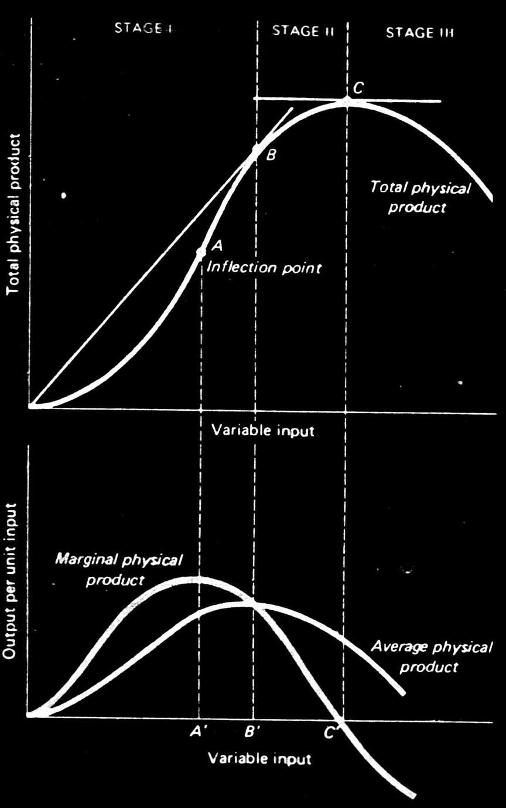
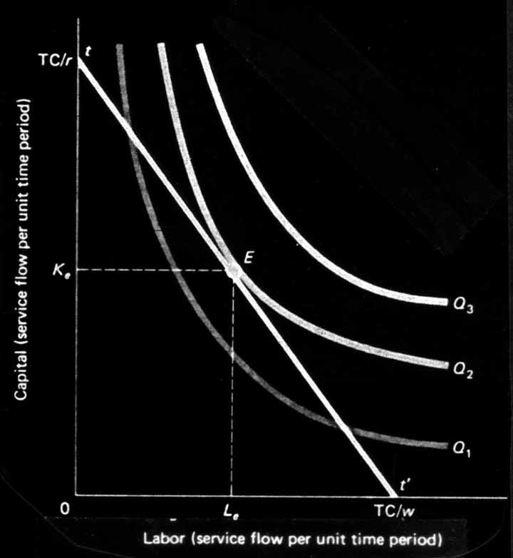
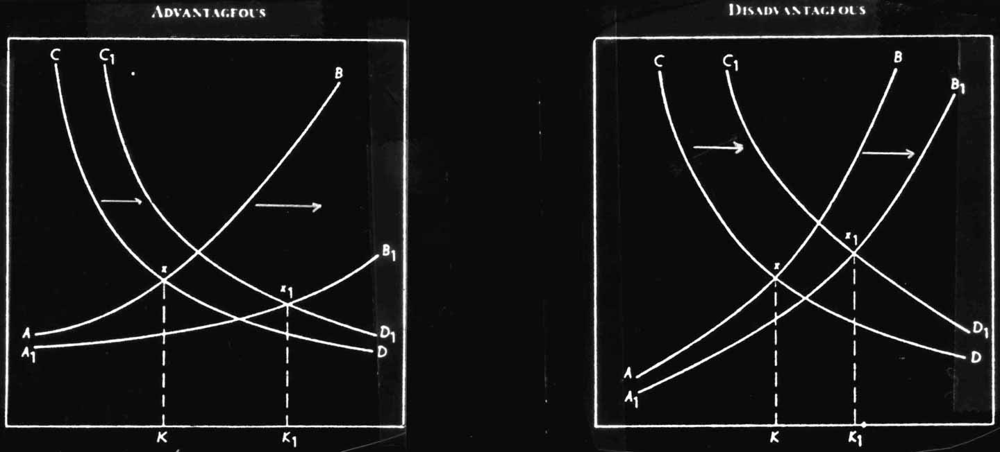
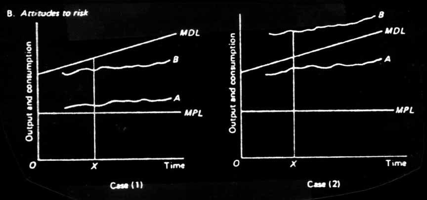

In the commercial firm, factors of production (nature, labor and capital) are combined in such a way as to equate each's marginal cost (rent, wage, and interest, respectively) to its marginal product. This is portrayed graphically below. Here we show the total, marginal and average productivity of one variable factor input holding all others constant. After the point leveled 'A', we see the marginal product decline. This is the second assumption of economic rationality discussed above. The firm will produce between B and C, specifically where the value of the marginal product (marginal physical product times the price of the output) equals the marginal factor cost. The profit yielded the to the firm will be the difference between the value of the average product less the value of the marginal product less the total of all other factor costs.

The choice between different combinations of inputs for the commercial firm is portrayed to the above right in two dimensional variable input space. The firm will be capital intensive or labor intensive (or we could use land extensive vs intensive) according to relative factor costs. The curve denoted Q represents a given level of output for varying combinations of two variable inputs. The slope of the curve represents the degree of substitutability between the two factors. At some point one cannot substitute for the other, and the curve Q becomes perfectly vertical or horizontal. Q is subscripted 1,2,3 according to the level of output, with Q3 greater than Q2 greater than Q1. The tt' line represents all possible combinations of expenditures between capital and labor inputs, with TC/r representing the total amount of capital availableait consumed the total budget (TC = Total Cost, r = the rental rate on capital), and TC/w representing the same respectively for labor (w = the wage rate). The optimum choice of input combinations is at E producing output level Qe and consuming Ke capital and Le labor.
Without marginal costs and revenue to determine the peasant solutions, however, the peasant farm often increases its outlays of labor and capital far above the optimum rate as determined by rate of return on factors of production. The peasant, instead, operates in terms of total output, as opposed to marginal. We see in the graph above for one variable input, total output is maximized where marginal product equals zero. If we equate the value of the marginal product to wage-- as we would in the commercial firm-- it is obvious that the peasant would receive no wage at all in maximizing total output. The choice between factor inputs is not determined so much by relative factor prices (although it is influenced in the sense of opportunity costs), but again by the size of the family farm-- ie. the amount of labor on hand, regardless of the amount of land and capital available to it.
When approaching the organization of an undertaking based on the principles of the family labor farm, we first of all find that one of its elements-- the labor force-- is fixed by being present in the composition of the family.
... Given freedom to acquire the necessary area of land for use and the possibility of having available the necessary means of production, peasant farms are structured to conform to the optimal degree of self-exploitation of the family labor force and in a technically optimal system of production factors as regards their size and relationship of the parts. Any excess of production means available of labor or of land above the technically optimal level will be an excessive burden on the undertaking. It will not lead to an increased volume of activity, since further intensity of labor beyond the level established for its self-exploitation is unacceptable to the family. Its productivity due to an increase in capital intensity naturally cannot be raised once the achieved rate of provision is itself optimal. (Chayanov)
The peasant's demand for capital is limited by the size of his personal budget. In Chayanov's estimation "...while the farm's capital intensity has not yet reached its optimum, the growth rate for capital renewal in most cases exceeds that for personal budgets ... (We) may suppose that determining the expenditures on capital renewal is inseparably linked with that of personal budgets ... these expenditures are included in our system of the basic economic equilibrium between drudgery of labor and the farm family's demand satisfaction" (Ibid) Hence, it can be represented in the same manner as introduced earlier. Below we show two possible effects of capital investment. In the first, the capital increased the level of productivity, both increasing the level of output and decreasing the degree of drudgery. In the second, the growth in labor productivity was so insignificant that it could not cover the deduction from the family's budget. To the extent that land and labor are substitutes, the same illustration can be drawn on an increase of land area.
Beckford (1974) offers a clarification of the concept of 'risk' as it pertains to the peasant farm based on an analysis by Miracle. He defines the minimum physiologic level of consumption (MPL) which is fixed by nature, and the minimum desirable level of consumption(MDL) which is culturally determined. The capacity to take risks with investment or new technologies increases as one approaches or exceeds one's MDL, whereas one will minimize i,sks as one approaches one's MPL. In the graphs below, B in both instances would be more likely to take risks, with greater probability in the second case.

For the peasant, the decision to take risks is a critical one because "the context of economic choice is a multi-purposed social organization, which, unlike a firm, cannot liquidate if it makes poor calculations...."(Nash in Dalton, 19,67). This forms a defining characteristic for Nash-- discussing the peoples of Meso-America:
The people and societies do not lack economic rationality, the matching of means and ends for best outputs; they do not hedge economic activity with a host of traditional barriers; they do not despise wealth and hard work; and the economies exhibit the free market where each man follows his own economic interest ... What is lacking is the social organization of an entity like the firm, an autonomous, corporate group dedicated to and organized for economic activity. (Nash, 1966)
The capacity to form capital is also limited by the impositions on the personal budget by the social processes of the community. The social 'leveling mechanisms' are common to peasant communities. Nash offers an illustration of the use of liquor as a medium of exchange among the Amatenango in Meso-America. Many exchanges are paid in liquor which is consumed at the point of exchange-- thus negating accumulation.
Nevertheless, the peasant community is not entirely homogeneous. Land is typically distributed (at least nominally) on the basis of family size. The larger families are often able to exploit economies of scale, enhancing the marginal productivity of labor (becoming land extensive rather than intensive). An example of this would be in due to the amount of time spent in hitching up the plow, the labor-time spent plowing an additional field would not be nearly as great as the first. Also the use of more land might allow for natural.fallowing as opposed to labor-intensive soil preparation. Graphically, returning to our previous graph of the one variable input case, say the variable input is labor, an increase in any other input would shift the total product of labor curve to the left, requiring less of the variable input per unit produce. This would explain how some land holders evolve into an overseer function, since by employing other labor that labor is able to produce subsistence needs for both itself and the landlord.